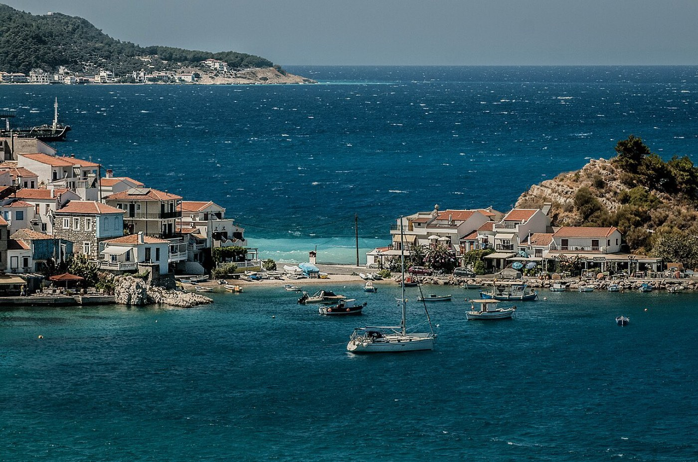

Alternativ
Kokkari-sløyfa, rute 21
~25 km kjøring9,4 km420 m4 t
Mer skygge enn rute 29: utelukkende skogsveier, ingen stiseksjoner, sammenhengende furukronetak. Umulig å gå seg bort. Men ingen vannkilde, og den ender ikke på en folketom strand.